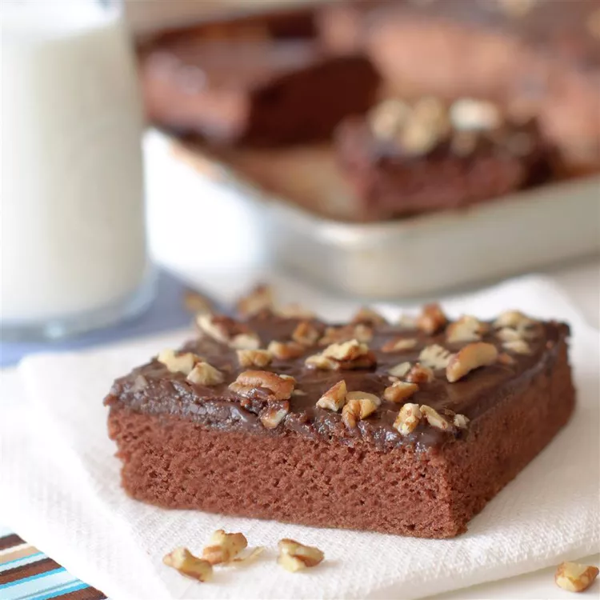

Chocolate Sheet Cake

Ingredients
- 2 cups all-purpose flour
- 2 cups white sugar
- 1/2 teaspoon salt
- 1 cup butter
- 1/4 cup unsweetened cocoa powder
- 1 cup water
- 1/2 cup buttermilk
- 2 eggs
- 1 teaspoon baking soda
- 1 teaspoon vanilla extract
Steps
- Preheat oven to 350 degrees F (175 degrees C). Grease and flour a 10x15 inch pan.
- Combine the flour, sugar and salt. Set aside.
- In a saucepan, melt the butter. Add the cocoa. Stir together. Add the water, allow the mixture to boil for 30 seconds and remove from heat. Pour over the flour mixture. Beat well.
- Add the buttermilk, eggs, baking soda and vanilla. Beat well. Pour into pan and bake for 20 minutes.
- Frosting: 1/2 cup butter, 1/4 cup unsweetened cocoa powder, 6 tablespoons milk, 1 teaspoon vanilla extract, 3 3/4 cups confectioners' sugar. Combine all ingredients. Boil for 1 minute. Spread on cake while still warm.